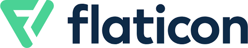

El origen de Flaticon y Freepik

Nuestro primer proyecto, Freepik, fue fundado en 2010 por los hermanos Alejandro y Pablo Blanes,
junto con su amigo Joaquín Cuenca, fundador de Panoramio (adquirido por Google).
Alejandro sintió la necesidad de crear una plataforma donde los diseñadores
pudieran encontrar recursos gráficos gratuitos.
Pablo y Joaquín apoyaron su idea y así fue como se creó Freepik Company.
Desde entonces, nuestro Universo se ha expandido sin parar, creando dos nuevos proyectos: Flaticon y Slidesgo.